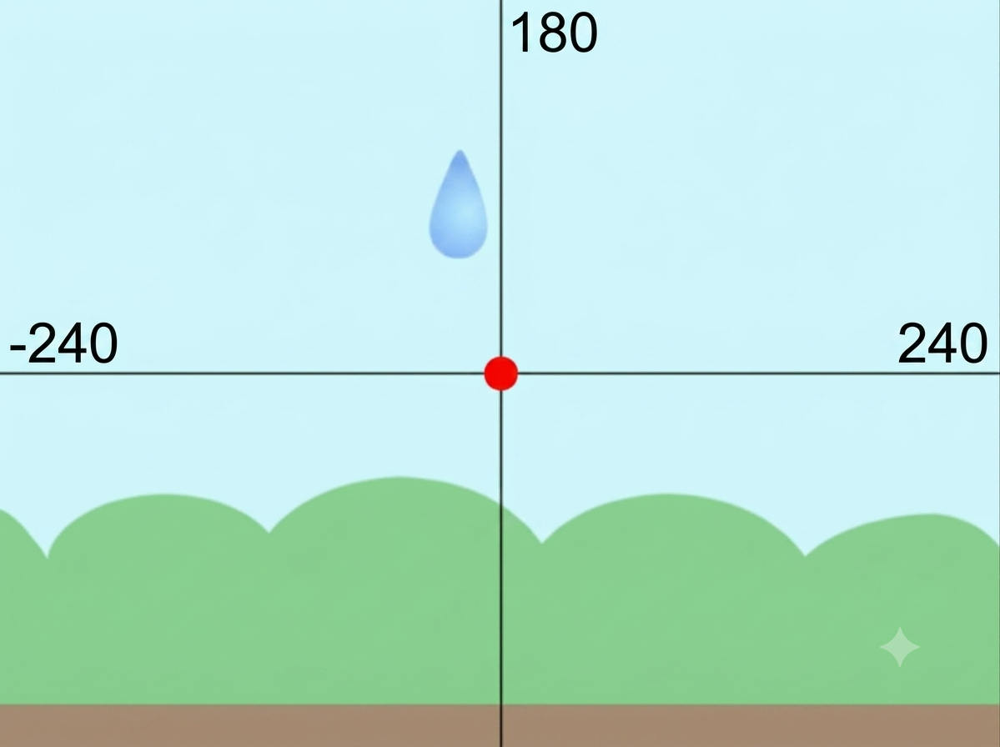

Интерактивная рабочая страница • Курс на 2 занятия

| Шаг | Блоки Scratch |
|---|---|
|
1. Случайное появление: Капля должна телепортироваться на самый верх ($Y = 180$), но координата $X$ выбирается случайно, чтобы дождь шел по всему экрану. |
перейти в x:
выдать случайное от -240 до 240
y: 180
|
|
2. Умное падение: Используем цикл с условием. Капля падает вниз на 5 шагов до тех пор, пока не встретит коричневую землю. |
повторять пока не касается цвета ?
изменить y на -5
|
Помоги Пико выжить в опасной пещере! Сверху летят тяжелые камни разного вида, а также редкие розовые кристаллы, которые нужно ловить.
| Что случайно? | Зачем это нужно в игре? | |
|---|---|---|
| Если выпадает 1 или 2 — опасный булыжник. Если 3 — драгоценный кристалл! | ||
| Устанавливаем случайный размер от 40% до 60%. | ||
| Мелкие камни летят быстрее! Используем блок «изменить Y» с переменной скорости. | ||
| Предмет должен появиться в случайной точке по горизонтали (от -220 до 220). |